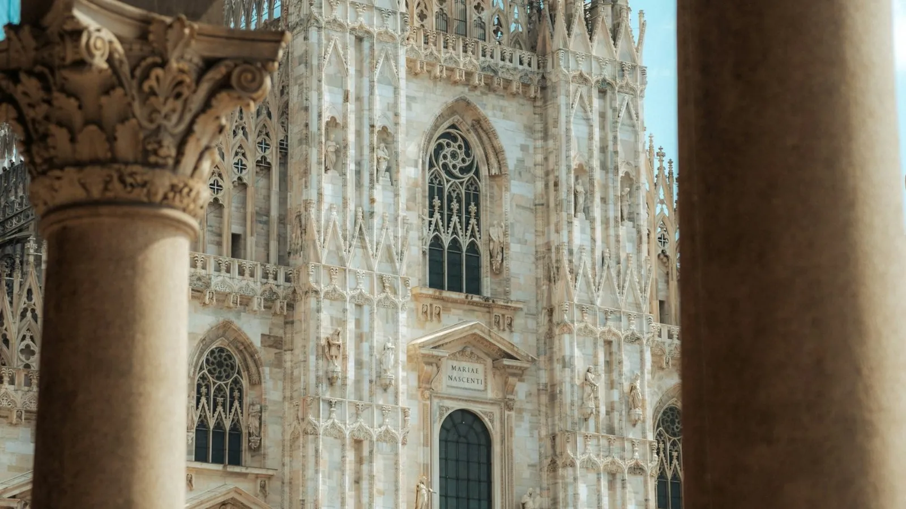

In breve
Due giorni bastano per vedere il meglio di Milano senza correre. Giorno 1: il Duomo con le sue terrazze, la Galleria Vittorio Emanuele II, la Scala e il quartiere degli artisti, Brera. Giorno 2: il Cenacolo di Leonardo, il Castello Sforzesco e il Parco Sempione, poi l'aperitivo sui Navigli. L'unica cosa da prenotare con molto anticipo è il Cenacolo.
Giorno 1: Duomo, Galleria e Brera
Mattina – il Duomo. Inizia presto in Piazza del Duomo, quando la piazza è ancora tranquilla. La cattedrale ha richiesto quasi sei secoli di lavori e la parte più bella è camminare sul tetto tra le guglie di marmo, con la Madonnina dorata sopra di te e, nelle giornate limpide, le Alpi all'orizzonte. Prendi un biglietto combinato con terrazze (ascensore o scale) e cattedrale: con l'ascensore costa di più ma risparmi le gambe. Dentro servono spalle e ginocchia coperte.
Tarda mattina – Galleria e Scala. Accanto al Duomo, la Galleria Vittorio Emanuele II con la sua copertura di vetro è una delle gallerie commerciali più antiche del mondo. I milanesi girano sul tallone sul mosaico del toro per portare fortuna. Attraversala fino a Piazza della Scala: il teatro fuori sembra semplice, ma il piccolo museo teatrale permette di affacciarsi sulla sala quando non ci sono prove.
Pomeriggio – Brera. A dieci minuti a piedi verso nord, Brera è il quartiere più bello di Milano: vie acciottolate, gallerie, botteghe e caffè. La Pinacoteca di Brera custodisce capolavori come il Cristo morto del Mantegna e la Cena in Emmaus di Caravaggio; accanto, l'Orto Botanico è una pausa tranquilla e gratuita.
Sera. Cena a Brera o in zona Corso Garibaldi. Se ti piace l'architettura moderna, prosegui fino a Piazza Gae Aulenti e al Bosco Verticale, le due torri coperte di alberi, bellissime illuminate di sera.
Giorno 2: Cenacolo, Castello e Navigli
Mattina – il Cenacolo. L'Ultima Cena di Leonardo da Vinci è dipinta sulla parete del refettorio di Santa Maria delle Grazie. Per proteggerla si entra in piccoli gruppi, a orari fissi, per circa 15 minuti. È breve ma indimenticabile. Arriva 20 minuti prima del tuo turno per ritirare il biglietto. Dopo, visita la chiesa: è gratuita.
Tarda mattina – Castello Sforzesco. In 15 minuti a piedi arrivi al Castello Sforzesco, la fortezza in mattoni rossi dei duchi di Milano. I cortili sono gratis; nei musei c'è l'ultima scultura di Michelangelo, la Pietà Rondanini, rimasta incompiuta. Dietro il castello il Parco Sempione porta all'Arco della Pace: ideale per un picnic o una pausa.
Pomeriggio – Sant'Ambrogio e shopping. La Basilica di Sant'Ambrogio, romanica, è una delle chiese più antiche della città e quasi sempre tranquilla. Se preferisci lo shopping, il Quadrilatero della Moda (via Montenapoleone e via della Spiga) è la zona del lusso; corso Buenos Aires e via Torino sono più economiche.
Sera – aperitivo sui Navigli. I Navigli sono gli antichi canali nel sud della città. Dalle 18 circa i locali lungo il Naviglio Grande e il Naviglio Pavese si riempiono per l'aperitivo: ordini uno Spritz o un Negroni Sbagliato (nato a Milano) e arrivano gli stuzzichini, a volte un vero buffet. L'ultima domenica del mese sul Naviglio Grande c'è un grande mercato dell'antiquariato.
Cosa prenotare prima
| Cosa | Quando prenotare | Consiglio |
|---|---|---|
| Cenacolo | Appena aprono le date sul sito ufficiale (di solito circa 2–3 mesi prima) | Esaurito? Cerca visite guidate con ingresso incluso o controlla il sito ufficiale per i posti dell'ultimo minuto |
| Terrazze del Duomo | Qualche giorno prima in alta stagione | La luce migliore è al mattino presto o al tramonto |
| Opera o balletto alla Scala | Settimane o mesi prima | Esistono posti economici in galleria, con visuale limitata |
| Hotel durante Design Week / settimane della moda | Mesi prima | I prezzi possono raddoppiare: controlla le date prima di scegliere le tue |
Arrivare e muoversi
- Da Malpensa: il treno Malpensa Express arriva a Cadorna o Centrale in circa 40–55 minuti. I bus per Centrale costano un po' meno ma sono più lenti nel traffico.
- Da Linate: la metro M4 ti porta in centro (San Babila) in circa 15 minuti al prezzo di un biglietto normale.
- In città: metro, tram e bus usano lo stesso biglietto. Puoi semplicemente appoggiare la carta contactless o il telefono ai tornelli della metro: il sistema addebita la tariffa giusta e si ferma al prezzo del giornaliero.
- A piedi: Duomo, Galleria, Scala, Brera e Castello sono tutti a meno di 20 minuti l'uno dall'altro.
- In auto: meglio di no. Il centro è una zona a pagamento (Area C) controllata da telecamere: leggi la nostra guida alle ZTL prima di noleggiare un'auto.
Dove dormire a Milano
- Duomo / centro storico: tutto a piedi, ma è la zona più cara.
- Brera: affascinante, vivace la sera, vicina a tutto.
- Centrale: comoda per treni e Malpensa Express, tanti hotel convenienti; di sera meglio le vie più tranquille.
- Porta Romana / Navigli: atmosfera locale, perfetta per le serate, ben collegata dalla metro.
Il Comune applica una tassa di soggiorno a persona e a notte, da pagare in hotel. Durante la Design Week (aprile) e le settimane della moda i prezzi salgono molto.
Cosa mangiare a Milano
- Risotto alla milanese, giallo di zafferano, spesso con l'ossobuco.
- Cotoletta alla milanese: costoletta di vitello alta, impanata e fritta nel burro.
- Panzerotti della famosa bottega vicino al Duomo: la coda scorre veloce.
- Panettone: il dolce di Natale di Milano, al meglio a novembre e dicembre.
- Aperitivo: è nato qui ed è ancora la "cena" più conveniente della città.
Milano è tra le città più care d'Italia: vedi la nostra guida quanto costa un viaggio in Italia e, per le regole a tavola, mangiare fuori in Italia.
Con un terzo giorno
- Lago di Como: treni per Varenna o Como in circa 1 ora, poi battelli tra i paesi.
- Bergamo: circa 50 minuti di treno, con una bellissima Città Alta murata raggiungibile in funicolare.
- Venezia o Torino: entrambe a meno di 2h30 con l'alta velocità se prosegui il viaggio.
Organizza i tuoi giorni a Milano
Alcuni link sono affiliati: se prenoti tramite loro non paghi nulla in più e aiuti 687 a restare gratuito.
Le tue giornate a Milano, organizzate e flessibili.
In 687 Italy organizzi il viaggio a tappe con treni, monumenti e meteo giorno per giorno, più gli avvisi di scioperi e ZTL. Se i piani cambiano, NOW ricostruisce il resto della giornata.
Fonti
- Duomo di Milano – biglietti ufficiali
- Cenacolo Vinciano – sito ufficiale
- Pinacoteca di Brera
- Castello Sforzesco
- ATM Milano – biglietti e contactless
- Malpensa Express
Verificate su questi siti ufficiali a novembre 2026. Prezzi e regole possono cambiare: controlla sempre prima di partire.